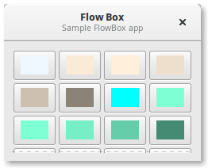

A Gtk.FlowBox is a container that positions child widgets in sequence according to its orientation.
For instance, with the horizontal orientation, the widgets will be arranged from left to right, starting a new row under the previous row when necessary. Reducing the width in this case will require more rows, so a larger height will be requested.
Likewise, with the vertical orientation, the widgets will be arranged from top to bottom, starting a new column to the right when necessary. Reducing the height will require more columns, so a larger width will be requested.
The children of a Gtk.FlowBox can be dynamically sorted and filtered.
Although a Gtk.FlowBox must have only Gtk.FlowBoxChild children, you can add any kind of widget to it via Gtk.Container.add(), and a Gtk.FlowBoxChild widget will automatically be inserted between the box and the widget.

import gi
gi.require_version('Gtk', '3.0')
from gi.repository import Gtk, Gdk
class FlowBoxWindow(Gtk.Window):
def __init__(self):
Gtk.Window.__init__(self, title="FlowBox Demo")
self.set_border_width(10)
self.set_default_size(300, 250)
header = Gtk.HeaderBar(title="Flow Box")
header.set_subtitle("Sample FlowBox app")
header.props.show_close_button = True
self.set_titlebar(header)
scrolled = Gtk.ScrolledWindow()
scrolled.set_policy(Gtk.PolicyType.NEVER, Gtk.PolicyType.AUTOMATIC)
flowbox = Gtk.FlowBox()
flowbox.set_valign(Gtk.Align.START)
flowbox.set_max_children_per_line(30)
flowbox.set_selection_mode(Gtk.SelectionMode.NONE)
self.create_flowbox(flowbox)
scrolled.add(flowbox)
self.add(scrolled)
self.show_all()
def color_swatch_new(self, str_color):
color = Gdk.color_parse(str_color)
rgba = Gdk.RGBA.from_color(color)
button = Gtk.Button()
area = Gtk.DrawingArea()
area.set_size_request(24, 24)
area.override_background_color(0, rgba)
button.add(area)
return button
def create_flowbox(self, flowbox):
colors = [
'AliceBlue',
'AntiqueWhite',
'AntiqueWhite1',
'AntiqueWhite2',
'AntiqueWhite3',
'AntiqueWhite4',
'aqua',
'aquamarine',
'aquamarine1',
'aquamarine2',
'aquamarine3',
'aquamarine4',
'azure',
'azure1',
'azure2',
'azure3',
'azure4',
'beige',
'bisque',
'bisque1',
'bisque2',
'bisque3',
'bisque4',
'black',
'BlanchedAlmond',
'blue',
'blue1',
'blue2',
'blue3',
'blue4',
'BlueViolet',
'brown',
'brown1',
'brown2',
'brown3',
'brown4',
'burlywood',
'burlywood1',
'burlywood2',
'burlywood3',
'burlywood4',
'CadetBlue',
'CadetBlue1',
'CadetBlue2',
'CadetBlue3',
'CadetBlue4',
'chartreuse',
'chartreuse1',
'chartreuse2',
'chartreuse3',
'chartreuse4',
'chocolate',
'chocolate1',
'chocolate2',
'chocolate3',
'chocolate4',
'coral',
'coral1',
'coral2',
'coral3',
'coral4'
]
for color in colors:
button = self.color_swatch_new(color)
flowbox.add(button)
win = FlowBoxWindow()
win.connect("delete-event", Gtk.main_quit)
win.show_all()
Gtk.main()